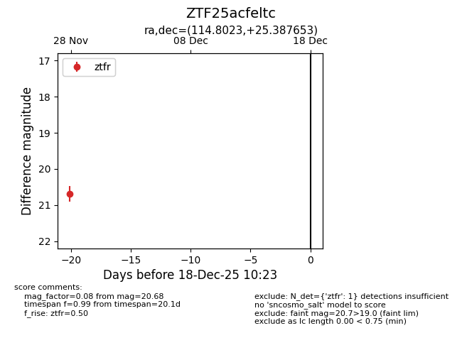
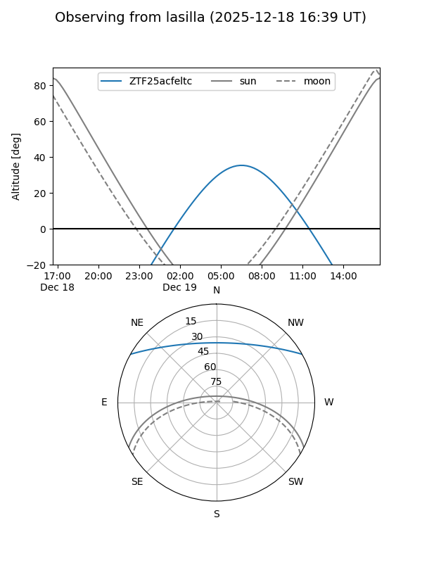
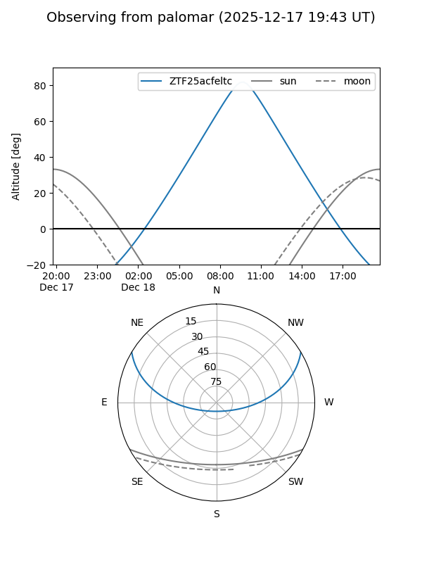

ZTF25acfeltc
Target ZTF25acfeltc at 2025-12-18 11:17
Aliases and brokers:
FINK: fink-portal.org/ZTF25acfeltc
Lasair: lasair-ztf.lsst.ac.uk/objects/ZTF25acfeltc
ALeRCE: alerce.online/object/ZTF25acfeltc
alt names
ZTF25acfeltc (ztf,fink_ztf)
Coordinates:
equatorial (ra, dec) = 114.8023,+25.38765
equatorial (HMS+DMS) = 07:39:12.55,+25:23:15.55
galactic (l, b) = (194.3977,+21.21586)
Photometry
last ztfr=20.68
1 ztfr detections
Lightcurve

Visibility


Additional plots